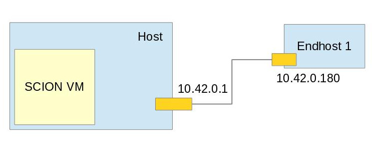

Connecting endhost to AS running in SCION VM¶
Introduction¶
In this tutorial we will cover steps necessary to configure SCION on endhost that will connect to already configured AS. This is useful in situations where you don't want to run complete AS infrastructure, but rather forward traffic to AS. This page covers situation where host machine is running SCION VM and external device wants to connect to it, figure below depicts such a situation.

For the sake of simplicity, we will assume that Host's IP address is 10.42.0.1 and endhost's IP address is 10.42.0.180 in rest of the tutorial. IP addresses are likely to be different in different networks, so use appropriate values.
Warning
This tutorial doesn't cover case in which enhost runs on host and tries to connect to VM's AS.
Prerequisites¶
In this tutorial we assume you already installed SCION VM on your machine. If that is not the case, please follow one of the following tutorials:
Assumption is that you know IP addresses of host and endhost system.
For this tutorial we will also need to install several utilities:
sudo apt install netfilter-persistent iptables-persistent
Step One - Installing SCION on endhost¶
Any platform that runs SCION can be used as an endhost. To install SCION on different platforms you can follow one of the tutorials:
Step Two - Copy initial configuration¶
After SCION infrastructure is successfully installed on your endhost device, we can start the configuration process. First of all we need to stop currently running scion topology and remove old gen directory.
cd $SC ./scion.sh stop rm -rf gen
Next step is to make sure both endhost and SCION VM share the same gen directory. This can be done in several ways, easiest is copying it directly from SCION VM.
Executing following command from VM should be enough to copy complete gen directory to endhost:
scp -r /home/ubuntu/go/src/github.com/netsec-ethz/scion/gen endhost_user@10.42.0.180:/home/endhost_user/go/src/github.com/netsec-ethz/scion/gen
Warning
Please replace endhost_user with appropriate user on endhost and IP address 10.42.0.180 with actual IP address.
Step Three - Remove unnecessary services¶
Next step is to disable unnecessary services, like border router, beacon server etc. on endhost device. This can be done by editing configuration file on endhost's system:
vim $SC/gen/ISD{ISD_NUMBER}/AS{AS_NUMBER}/supervisord.conf
It is sufficient to remove last 2 lines that look similar to this:
[group:as1-1029] programs = br1-1029-1,bs1-1029-1,cs1-1029-1,ps1-1029-1,sd1-1029
In the same file edit following line:
command = bash -c 'exec bin/sciond "--api-addr" "/run/shm/sciond/....
By adding additional addr argument to look like this:
command = bash -c 'exec bin/sciond "--addr" "10.42.0.180" "--api-addr" "/run/shm/sciond/
Make sure you replace 10.42.0.180 to correct endhost's IP address.
Next we need to remove all directories except endhost from $SC/gen/ISD{ISD_NUMBER}/AS{AS_NUMBER}/ directory.
rm -rf *-*
Step Four - Iptable rules¶
Configuration files we copied from VM in first step contain address 10.0.2.15. This address is not accessible outside VM and we need to rewrite it to host's IP so packets get routed in right way. This can be done with iptables.
sudo iptables -t nat -A OUTPUT -m udp -p udp -d 10.0.2.15 -j DNAT --to-destination 10.42.0.1 sudo netfilter-persistent save
Step Five - Restart SCION¶
Last step is to reload configuration and restart SCION.
~/.local/bin/supervisorctl -c supervisor/supervisord.conf shutdown ./scion.sh run
Next steps¶
Best way to verify endhost configuration is by running properly is by running some demo applications: